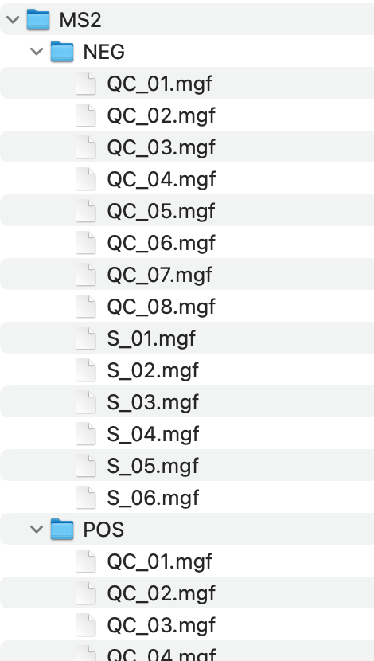
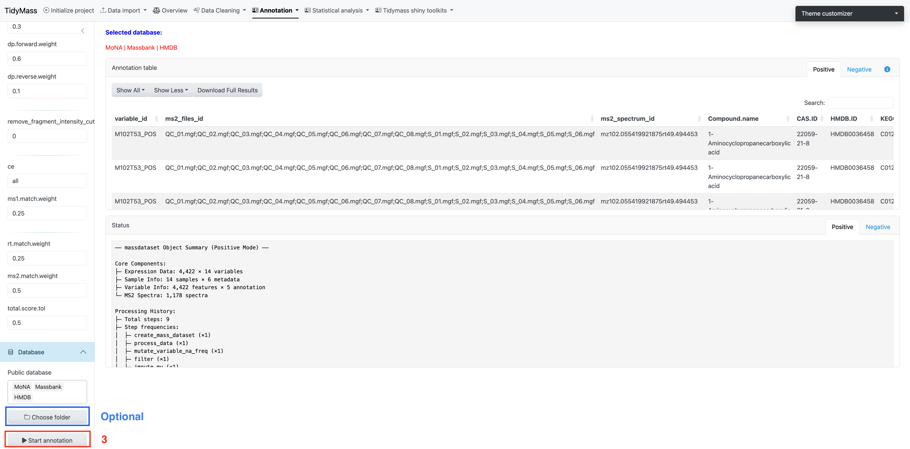

3 Downstream data processing
3.1 Metabolite annotation
Metabolite annotation can be performed based on in-house and available open-source databases. To begin with, you need to click Select MS2 folder and import prepared MS2 data. These files should be in the format of “.mgf”, and they should be stored separately for negative and positive modes.

Parameters
- column: A character vector specifying the column types. Default is “rp”.
- ms1.ms2.match.mz.tol: Numeric, the m/z tolerance for matching MS1 and MS2. Default is 15.
- ms1.ms2.match.rt.tol: Numeric, the retention time tolerance for matching MS1 and MS2. Default is 30.
Once you have set the parameters, click Start to import MS2 data.

Next, you can choose suitable parameters for metabolite annotation.
Parameters
- ms1.match.ppm: A numeric value specifying the mass accuracy threshold for MS1 matching in parts per million (ppm). Defaults to 25.
- ms2.match.ppm: A numeric value specifying the mass accuracy threshold for MS2 (Fragment ion) matching in ppm. Defaults to 30.
- rt.match.tol: A numeric value specifying the retention time matching tolerance in seconds. Defaults to 30.
- candidate.num: A numeric value specifying the number of top candidates to retain per feature. Defaults to 3.
- column: A character string specifying the chromatographic column type, either “rp” (reverse phase) or “hilic”. Defaults to “rp”.
- threads: An integer specifying the number of threads to use for parallel processing. Defaults to 3.
We need necessary MS2 databases for metabolite annotation, and here we provide some common in-house databases such as Mona, Massbank and HMDB.
More MS2 compound databases can be downloaded from Tidymass Website. After the download is complete, place them in a new folder and click Choose folder.
Click Start annotation to begin the job (The job will start about 10s after you click the button, don’t click again!).

3.2 Annotation filtering
The annotation results are assigned confidence levels according to MSI (in-house database, level 1; public MS2 database, level 2; MS1 database, level 3).
After obtaining annotation results, you can choose how to keep multiple annotations, how to remove redundancy and how to keep annotation levels.
Click Adduct for level 3 annotation and select suitable models and methods, then click START to perform annotation filtering.